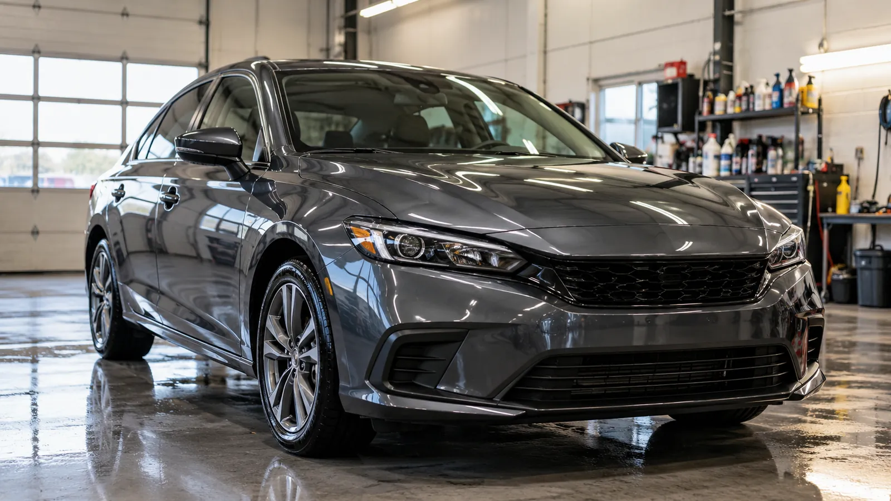
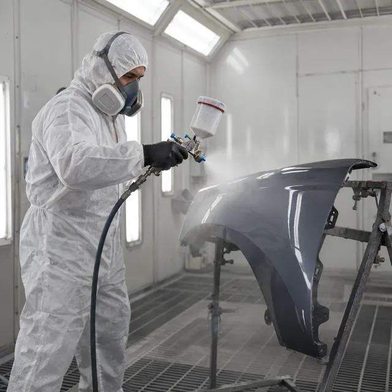
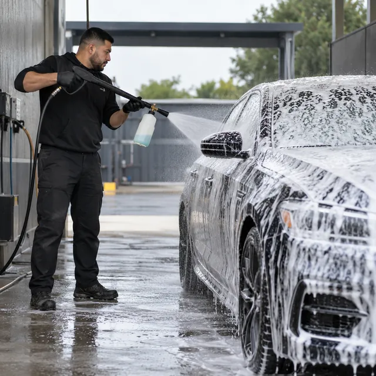
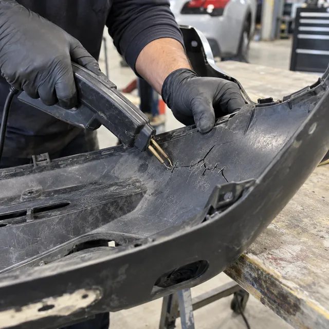

Taller de chapa, pintura y estética · Buenos Aires
Chapa, pintura y detailing para renovar tu auto
Golpes, rayones, paragolpes plásticos y estética completa, por dentro y por fuera.
- Horario
- Lun a vie 8 a 18 h · Sáb 8 a 13 h
- Taller
- Buenos Aires · dirección a confirmar
- Presupuesto con fotos, por WhatsApp
- +54 9 11 3785-7481
Nuestros servicios

Chapa y pintura
Sacamos golpes y abolladuras, preparamos la pieza y la pintamos en cabina, buscando el tono exacto de tu auto.
- 01Golpes y abolladuras
- 02Masillado y lijado
- 03Pintura de piezas o del auto completo
- 04Igualación del color

Detailing
Lavado profundo, pulido que saca marcas y rayones finos, interior a fondo y ópticas que vuelven a ser transparentes.
- 01Lavado y descontaminado
- 02Pulido y corrección de pintura
- 03Interior y tapizados
- 04Restauración de ópticas

Reparación de paragolpes plásticos
Soldamos fisuras y roturas del plástico, reconstruimos los encastres y lo dejamos listo para pintar, sin cambiar la pieza.
- 01Fisuras y roturas
- 02Encastres y solapas quebradas
- 03Masillado y pintura del paragolpes
Trabajos del taller
Imágenes ilustrativas
Cómo es el trabajo
- 01
Mandás fotos del daño
Por WhatsApp: una de lejos y una de cerca, con buena luz.
- 02
Te pasamos el presupuesto
Con lo que hay que hacer en cada pieza y el tiempo de trabajo.
- 03
Coordinamos el día
Elegís cuándo traer el auto al taller.
- 04
Lo retirás listo
Lo revisamos juntos antes de que te lo lleves.
Marcá dónde está el daño
Tocá las partes del auto, elegí qué le pasó y mandanos la consulta junto con tus fotos.
¿Qué le pasó?
- Tocá una parte del auto para empezar.
Sumá una foto de lejos y una de cerca de cada daño.
Mandanos fotos y te pasamos el presupuesto
- Horario
- Lun a vie 8 a 18 h · Sáb 8 a 13 h
- Taller
- Buenos Aires · dirección a confirmar
Preguntas frecuentes
¿Cómo pido un presupuesto?
Mandanos por WhatsApp fotos del daño, una de lejos y una de cerca, con buena luz. Con eso te decimos qué hay que hacer en cada pieza.
¿Igualan el color de mi auto?
Sí. Preparamos la pintura con el código de color de tu auto y la ajustamos para que la pieza no se note distinta al resto.
¿Conviene reparar el paragolpes o cambiarlo?
Las fisuras, roturas y encastres quebrados se reparan con soldadura plástica. Si falta un pedazo grande, te lo decimos en el presupuesto.
¿Puedo pedir solo el detailing?
Sí, el detailing se pide por separado: lavado, pulido, interior u ópticas, según lo que necesite tu auto.